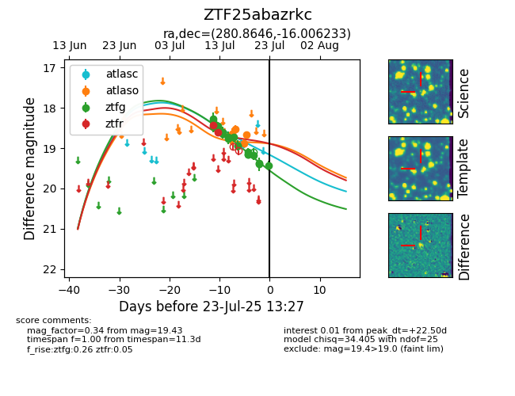

Target ZTF25abazrkc at 2025-07-23 13:27, see:
FINK: fink-portal.org/ZTF25abazrkc
Lasair: lasair-ztf.lsst.ac.uk/objects/ZTF25abazrkc
ALeRCE: alerce.online/object/ZTF25abazrkc
alt names
ZTF25abazrkc (ztf,fink)
coordinates:
equatorial (ra, dec) = (280.8646,-16.00623)
galactic (l, b) = (17.7507,-5.50626)
photometry
last atlasc=18.89, atlaso=18.66, ztfg=19.43, ztfr=18.60
1 atlasc, 4 atlaso, 20 ztfg, 2 ztfr detections
